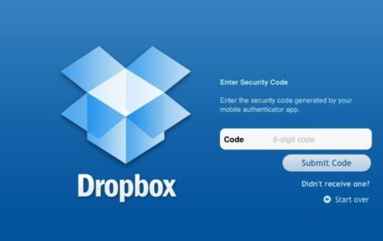

什么是最小可行性产品
最小可行性产品（Minimum Viable Product，MVP）最早出现在Eric Rise的《精益创业》一书中，刊载于哈佛商业评论，它提出“在市场和风险尚不明确的情况下，贸然倾尽公司所有全力投入是不太明智的。所谓的最小可行性产品，是让开发团队用最小的代价实现一个产品，以此最大程度上了解和验证对用户问题的解决程度。”
Dropbox在项目初期，仅用了一个3分钟视频、一个简洁的登录页面，便获得了大量用户注册，且清楚地告诉了用户“我是谁”。这种以极小的成本获得了对用户的需求验证，这就是一个很好的最小可行性产品例子。

图 1 图片为Dropbox官网登录页面
形象点解释一下这个名词，“试”这个概念大家一定不陌生，在生活中，有很多和“试”密切相关的事情。比如，在开发完一个新版本后，通常的做法不是立刻全量上线，这样做有极大的风险，较为可行的方式是采用一定比例的“灰度上线”亦叫做“小流量”上线，这样既可以满足最快速度触达目标用户，收集他们的使用体验和反馈，同时也不会面临全量上线出现意外事故导致负面影响的风险，这个“灰度上线”或者“小流量”上线的过程，就是一个新版本的“最小可行性产品”的过程。
同样，一部鸿篇巨制的大片在具体开始拍摄之前，工作人员会事先针对每个镜头绘制电影的分镜头脚本，以确保镜头的连贯、降低拍摄成本，同时在开始拍摄之前，工作人员还会对于分镜头的脚本进行多次讨论和修改，这里的分镜头脚本对于最终成型的电影来说，就是一个“最小可行性产品”。
假如你立项做一个创业项目，打算设计一款高科技活性炭材质的纯棉内裤，你的产品核心诉求点是“活性炭材质”吸附有毒有害物质，那么为了快速打造你的“最小可行性产品”验证市场反应，你预约了一家加工制造厂为你定做这款内裤，在这个时候你应该重点突出最核心特质，即吸附活性炭功能上，快速让加工厂加工生产一个样品拿到市场去验证，而不是精雕细琢讲究不同花色和样式把精力放到工艺上。
因此“最小可行性产品”主要强调在产品项目的初期，作为产品从业者要学会“克制”，聚焦场景和需求，提炼一款产品最核心的功能特性，去掉所有锦上添花的其他功能，并且快速找到验证路径，锁定目标用户，收集体验并尽快迭代修复的过程。通过几个例子更好地理解这个概念。
1
人人湘米粉
人人湘是一家米粉店，是一家开在北京，没有收银员，卖出150000碗米粉，获得2700万融资的米粉店。是的，你没有看错，这是一家互联网化思维的米粉店，也是巧妙运营了MVP思路在立项初期快速探索产品可行性的米粉店。人人湘的创始人希望在北京开一家能够吃到家乡口味米粉的米粉店，可是，面对众人连锁品牌、巨额的租金、对人群口味的不确定性等未知因素考虑，他们采用先快速搭建一个粉店雏形，即人人湘的MVP，这一家粉店叫做“无名米粉店”，它开在中关村，就在3W咖啡的旁边，是人人湘用来测试自己产品可行性的雏形。为了摸准用户心智，来自家乡以及其他外地的白领中午就餐是否会选择他们的米粉，还是米饭类更能带来流量，提高翻台率，他们便从湖南米粉中选出了20几种，全部放在测试店“无名米粉店”里面进行销售，然后纪录每一种类型的粉的销售情况和用户食用后的反馈情况。
不光如此，他们还适当地添加了一些米饭，比如牛肉盖饭、宫保鸡丁盖饭等。经过了3个月的测试之后，证实了他们原先的设想，即选择鱼粉的用户是最多的。于是在这样快速、简洁上线的测试店里，他们完成了假设的佐证，于是最终确定店内的5款主打米粉，即老馋粉、辛太急、炒粉、至尊鲜鱼粉、椒无双。

图 2人人湘米粉产品宣传图
2
Instagram
从2010年上线0个用户，到2013年上百万的用户量。而纵观Instagram的发展历程，也是在产品立项的初期巧妙地运营了MVP理论，首先他们用h5制作了一个简单的原型，叫做Burbn，然后拿着这个原型给周围的朋友使用，收集意见和反馈。Burbn的定位和设计理念和现在的Instagram有很大的区别，它的主场景为特定的地点，核心功能锁定在签到上，并且还支持游戏、社交媒体、图片分享等功能。当Instagram的联合创始人Kevin 和 Krieger拿着他们的MVP Burbn收集第一批种子用户的反馈和建议，竟意外地发现用户并不是拿Burbn来签到的，而是用它发布、分享图片，跟他们最初设想的用法完全不一样。于是他们砍掉了原来的游戏、签到等功能，只留下了和发布照片相关的功能，正式将产品定位为图片社交分享社区。于是，Instagram应运而生，上线后几个月就获得了破万的用户量。

图 3 图片来源于Quora kevin systrom
3
Craigslist
界面极其简洁干净，载入和响应速度极快，而且除了用户上传的之外几乎没有其他任何图片，只提供用户最需要的服务，没有广告位，没有一丝一毫的垃圾，操作简单，安全性高。网站虽界面简单但其服务能力相当强大，所有的功能都是对准用户需求的，例如信息发布一段时间会被自动删除，但在账号里可以看到过去所有发布过的信息，只要一个按钮便可以repost；而沉下去的帖子可以通过renew顶上去。

图 4 图片为Craigslist官网
4
Reddit
界面简洁清爽，没有多余冗杂的设计，是汇集各大年龄阶层的大型论坛，每个论坛有子版块，子版块的话题各不相同，广受用户喜爱。对Reddit而言，他们的工作优先级排序一定层面反应了用户需求，他们的工作优先级按照内容运营、管理员工具、商业化、移动端研发与优化顺序排序的，因此即便前端页面功能并不十分丰富情况下，也有相当大的用户使用。

图 5 图为Reddit官网
“最小产品”与“可行产品”
Eric Rise在《精益创业》中提出最小可行性产品的概念后，被不少创业圈的人误解为“最小可行性产品”就是用最小的成本快速上线迭代，甚至有时在并未想清楚业务形态和产品逻辑的情况下就贸然立项。这种只看到“最小”而忽略“可行”的做法是本末倒置的。“最小可行性产品”的核心是解决两个问题：核心功能、种子用户。因此“最小”和“可行”是一个并列的概念，两者相辅相成、缺一不可。

图 6 MVP模式关系图
“最小可行性产品”的核心要义不在于寻找“最小产品”，而在于“佐证假设”，因此“最小可行性产品”不是一个产品，它是一个求证的过程。很多公司和项目初期，会常常犯这样的错误，“我们要快速迭代，快速迭代，小步快跑，先上线看市场反馈，我们再做升级调整。”这样做的一个思维路径是用市场反应来找答案，而不是用市场反应来验证答案。显然不是最小可行性产品所提倡的概念。
“最小”是一个相对概念，不是绝对限定值。不能轻易地认为“最小可行性”产品中的“最小”就是最精简的功能、最简陋的流程、最易于上线的路径，这样就可以快速迭代、小步快跑了。不同的产品，定位与所需要解决的关键痛点不同，其涉及的“小”的概念和范畴也是不同的。探索“最小”的过程，需要你回答并且精准地提炼出你想要验证的产品的“功能特性”、“卖点”、“构成要素”、“关系链”，这个过程就是提出“假设”的过程，当你完成了假设之后，需要用“做减法”的方式提炼选出最核心的功能卖点，然后拿此卖点到市场上去验证，这个过程就是进行“佐证”的过程。
一、假设：
假设是你基于现有市场的需求情况，结合你的调研和深度研究，主观加工制造出来的一个“联系”，即受众需求和产品功能的联系，这个假设其实就是针对于你打算投入市场的产品的定性，回答一个问题“它是什么”。
比如，通过观察，发现大量的用户在办公中会使用一些常用社交软件进行文件传输和共享，基于这个观察你们提出疑问，是不是用户在用社交软件办公、聊天过程中，也存在部分处理文件、比如文件的存储、转存、回转的需求，基于这个疑问你们提出假设，建立在社交关系链基础上的文件传输和共享是成立的，于是你们打算扩展产品功能，设计一款基于社交产品的文件管理功能。那么，这时提出文件管理功能模块的过程，其实就是一个提出假设的过程。
基于一个场景或者潜在市场，可以提出的假设千差万别。但是对于一个初期产品、一个独立的feature，你的假设一定要聚焦，同一时间只解决最痛的一件事情。因此你的假设一定是可定量的，即你最希望用一个什么样的feature或者解决方式去帮助用户解决痛点。在美国好莱坞电影编剧选择剧本时，一般最希望看到的是一个可以用一句话看到的剧本，这样才可能第一时间让编剧以及受众留下印象，同理也作用于一个产品的假设提出。这也和最小可行性产品中的“最小”不谋而合。
在平时的工作中，可能运用到“假设”的方法有：
· 头脑风暴，找关键词，并将关键词聚类
· 想象如果若干个功能中只能保留一个功能，那它会是哪一个
· 回归生活场景，把自己当成用户，寻找需求的原始根因
· 同比其他产品，面对一个需求，市场上最好的产品解决方式是什么，最差的产品解决方式是什么
· “变废为宝，”尝试颠覆已有“不合理”的假设，对其进行打磨和改革，尝试思考，加上什么、或者减去什么它更合理
· 自我设问，不断问自己“为什么”，如果缺少了一些功能，产品是否还有意义
二、佐证：
“佐证”是将你事先假设的产品feature和卖点拿到市场验证的过程，以确定之前的“假设”是否可行。因此“佐证”的目的是验证需求，并且用“可行”的标准来衡量“假设”。
佐证的过程是需要对标“可行”的标准，“可行”从字面意思来理解，绝不是简简单单让一个产品模子从0到1。从无到有的过程回答的是“可能”的问题，不是“可行”的问题。“可行”一定是发生在多维度环境下，多向度的交互动作，即一定是产品、概念、受众、环境等发生碰撞，才能判断是否“可行”。因此，可行可以理解为“假设可行”、“验证可行”、“市场可行”、“用户可行”。“可行性”的过程是在解决整体性、关联性、共鸣性、情感连接，做减法，找到潜在种子用户。

图 7 可行性模型
1）假设可行：
假设可行也即就是功能可行，做产品的时候，你会有很多假设。你假设自己知道用户的需求是什么，他们喜欢什么样的设计，应该采取什么样的市场策略，用什么架构最有效，如何持续地盈利，哪些法律和规定是必须遵守的。但不管是一个多么资深的产品设计者，总会有一些假设是错的。
比如你看到现在宠物市场很火，尤其是大城市，于是你做出假设，认为你可以在北京这样的一线城市做一个提供高端的宠物护理项目。这是你基于身边看到、听到和观察到的现象得出来的假设。但是基于此假设是否可行，这里会有这样一些问题，宠物护理对于跨区域的要求并不高，通常是锁定在小区附近居住人群密集的地方，所以你的选址和跨区域规模化需要再多加考虑；另外，你的护理服务是上门的，还是直接到店的？如果是上门服务，那么主人家中的设备设施是否满足需求？如果是到店的，是否支持在线预约，让宠物护理业务＋互联网，基于此假设，如果锁定了一个高端住宅区，那么如何更高效地实现线上、线下对接，简单来说即怎么高效地接送宠物。
虽然搞清楚是否有人需要你的产品的唯一方法，就是把你的产品尽快推向市场。但是在假设的初期，你需要结合基于产品卖点、环境、情景做多方面求证。
2）验证可行：
验证可行也即验证方法可行，完成了假设的设定之后，你需要开始构思一个有效的验证假设的防范。如果你想做一款基于本地商户线上下单、接单的产品，你预设了这些功能，比如可以接单、查看流水、收入分析、各大接入第三方平台效果监控、直接对接地图、团购网站、自定义优惠券金额、产品类别、上传图片并修改美化图片功能，甚至还有一些辅助小工具比如计算器、账本等，那么验证这个假设有以下几种方法，你拿着你的设想和理念去跟投资人喝喝咖啡，融一笔钱，然后召集来一个初始团队，用几个月时间打造这样一款实体产品，接着带着你的产品去实体商店一一推广，在各大渠道发布造势，然后等候市场和用户验证是否需要你这款产品。
其实，除了这种方法以外，你还可以有别的方式在更早的时候验证你的想法是否可行了。初期MVP就是移动应用的原型，你可以用手绘方式简单地勾勒出你产品的核心功能路径，然直接拿着它就可以去和你的目标用户聊了，可以问问如果现在有这样一款产品提供给他们用，他们是否有兴趣，他们是否已经有在使用同类的产品了，叫什么，使用频率有多高，是刚需吗，是否还存在其他可替代的产品。
我曾经参与过一款面向医生用户群体的产品立项，在立项初期团队是采用了这样的一种方式，先是明确出产品核心feature和主流程交互，然后让设计师设计了几个关键路径的交互稿件，我们就拿着这个去跟医生用户沟通，让他们模拟使用的场景，其结果是这样的方法行之有效且成本非常低。
3） 市场可行：
经济学中对于有效市场假说，将市场分为三类，弱有效市场，半强有效市场，强有效市场。这里所提及的市场可行，和对应的目标用户有很大的关系。还是以刚才的宠物护理项目为例，在构思这样一个项目的初期，出于资金、人员等因素的限制，对于初创团队、公司很难一开始就有那么多的人力、物力在全国范围内铺开，因此通常会聚焦到一个有限市场内去对需求的可行性进行验证，比如选择一个人流量较大、入住率较高的高端住宅区，这时候其他区域就不再是你做此次产品可能性验证的市场范围了。同理，你设计一款针对二三线城市本地商家投放推广广告的产品，那么你的目标可行市场就一定不能是北上广这样的区域。市场与定位的目标用户群体是相辅相成的，因此在选择市场的过程中需要时刻比对目标用户进行阶梯式筛选。
4） 用户可行：
人总是对新鲜事物包含激情的，所以，当你的新产品上线后，所有人都可能成为你的潜在用户，但并不代表所有人都是你的有效用户。也即就是说，当你做出了一款新的产品，在产品刚推广出去时，会有一批用于尝试新鲜事物的用户率先使用你的产品，他们可能会针对自己的使用场景和体验给你提出一些意见或建议，然后他们并不是你的忠诚用户，对你的产品也没有那么高的粘性。
一段时间过后，可能因为被其他新的产品吸引过去了。因此，一定要注意对用户进行甄别，对用户的反馈反复求证。Geoffrey A. Moore 在其经典著作“Crossing the Chasm” 里，也提出了类似的观点。“技术产品的生命周期定律，在天使用户和早期大众用户之间有一条很难跨越的鸿沟。”所以，找准你的天使用户，找准对象说，然后快速修正迭代，最后改进成适合早期大众用户的真正产品。最小可行性产品需要用户选择的可行。

图 8 图片来自Geoffrey A. Moor在其经典著作“Crossing the Chasm”
记得曾经在用户访谈日就一款社交软件采访用户时，当问及到“你们觉得现在的产品是否好用，如果不好用那么希望它还有哪些功能？”这类问题时，用户总能给出五花八门各种答案，比如“希望可以用它手写文字”、“希望还可以支持看一些视频、新闻之类的”、“希望可以有个日程提示”等。其实时间一长你就不难发现，这类用户并不是针对你所提出的产品本身在提供意见，而是在回答他生活中的一些痛点，这些痛点有些跟这个产品相关，有些跟这个产品毫无关系。
在平时的工作中，可能运用到“佐证”的方法有：
· 巧用“六顶思考帽”方式进行内部讨论，变换思维角度验证需求
· 部门内不同成员进行可用性测试、可以是访谈、简单沟通，观察目标对象使用反应
· 快速产出原型图，用幻灯片、flash等方式观察目标用户使用体验
· 抓大放小，找准种子用户，让他们看到产品的潜力和未来发展方向。
打磨产品的过程是讲好一个故事的过程
俗话说“罗马不是一天建成的”、保尔柯察金也用他的毅力回答了“钢铁是怎样炼成的”。所以“最小可行性产品”并一个可量化的产品，而是一个需要断试错、迭代、大量验证、求证的过程。
最小可行性产品提倡两个方面核心点：找到核心功能、找准种子用户。在产品设计的初期阶段，核心功能的选取就类似于故事主线的梳理。一个故事创作会经历“背景”、“类型”、“结构”、“要素”、“爽点”的层层漏斗式提炼，对应到产品设计过程中，也即“场景”、“类别”、“架构”、“元素”、“feature”。因此打磨产品的过程是一个讲故事的过程，我们可以借用讲故事的一些技巧到最小可行性产品的设计中去。

图 9 故事漏斗法抓取你的产品“爽点”
你去看一部电影、或者读一本小说，如果这个内容足够吸引人并且可以第一时间吸引你的共鸣，那么尽管看完时隔几天或者几个月，你仍然可以用一句话将这个电影、或者是故事的主要情节梗概概括出来，哪怕这个时候故事里的其他一些细节你已经记不清楚了。
这就是故事的爽点，一个写作者在编译自己的故事时，首先会为故事设定一个大致背景，接着会有一个大概的方向，自己即将讲一个什么类型的故事，比如是爱情故事、武侠、悬疑故事、荒诞故事、侦探、喜剧、警匪还是什么。这就类似于你在构思一个产品项目时想做一个什么方向的产品，是社交、云、工具、生态服务平台还是什么。
紧接着，故事作者会基于特定的方向开始收集资料和素材，比如所讲的是一个武侠类型故事，我们都可以预期的元素有，绝顶高手，传奇的武功，各门各派，鱼龙混杂的酒楼，群英荟萃的武林大会。还要有师徒，师兄弟，师妹，凶徒，好友，魔教余孽，知名美女等各类角色。故事的创作者会基于这些元素进行素材收集和有的放矢地排列组合。
收集完素材之后，紧接着，你需要为你的故事构思一个“爽点”（也可以理解为high点），即在一个产品中你主打的一个核心feature，除了这个主要的feature外可能它还会有一些其他的功能点，但是这一个feature是你们主要想传达给用户的，让用户记住你的，类似于一个用户一天使用几十个产品之后，回过头说起你的产品来还能记住的那个点。
当你燥热口渴时，你想要的就是一听冰可乐；当你想要刺激恐怖，你就会去找一部恐怖电影。写作中比如创作一个女性宅斗文，你的“爽点”就是要是复仇，需要传递出来“吃了我的给我吐出来，拿了我的给我还回来”，甚至最好是“踩过我的给我跪下来”。
在设计一款类型产品时就是这样直接满足用户某一方面的渴求，因此，在进行产品核心feature构思的阶段就尤其要先搞清楚这个类别的“爽点”在哪里。而爽点的选取思路就同比最小可行性产品中“最小”中对于“功能特性”、“卖点”、“构成要素”、“关系链”等的提炼。
比如，你想做一款K歌APP，调研了一下现有市场上的产品，发现大部分都是在一个独立app产品中进行K歌，然后再将歌曲转出到其他平台。比如唱吧的定位是“陌生人K歌”，因此提供的主要功能是录歌、直播唱歌、陌生人录音等。

图 10 为K歌类产品现状分析
基于此你想做一个能主要聚焦于微信好友，并且可以邀请熟人朋友一起K歌的产品。你的核心feature便是能直接邀请并和微信好友进行在线K歌。在前期阶段，在微信发起邀请且如何利用微信关系链进行K歌将作为你这款产品设计的要点，像其他附属功能比如直播、打赏、在线KTV等将不作为主要的关注点。甚至在前期可以基于如何自然地在微信中发起邀请、接受邀请、打开K歌房间等流程设计对应的交互页面，然后拿着你的交互Demo找到身边朋友、或者用户听听他们的意见和反馈。
小结一下
· “最小”和“可行”是一个并列的概念，两者相辅相成、缺一不可。
· “最小”是一个相对概念，不是绝对限定值。探索“最小”的过程，需要你回答并且精准地提炼出你想要验证的产品的“功能特性”、“卖点”、“构成要素”、“关系链”，从而以做减法的方式精确地找准核心功能卖点。
· 从无到有的过程回答的是“可能”的问题，不是“可行”的问题。“可行性”的过程是在解决整体性、关联性、共鸣性、情感连接，做减法，找到潜在种子用户。
· “最小可行性产品”的落脚点不在“产品”，在于“佐证假设”，因此“最小可行性产品”不是一个产品，它是一个求证的过程。
· 因此MVP绝不是一个可量化的产品，通过你不断试错、迭代的试验品，它是一个过程，而且不是一个一蹴而就的过程，它是一个需要大量验证、求证的过程。
· 最小可行性产品提倡两个方面核心点：找到核心功能、找准种子用户。
· 打磨产品的过程是一个讲故事的过程，我们可以借用讲故事的一些技巧到最小可行性产品的设计中去。一个故事创作会经历“背景”、“类型”、“结构”、“要素”、“爽点”的层层漏斗式提炼，对应到产品设计过程中，也即“场景”、“类别”、“架构”、“元素”、“feature”。